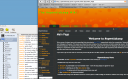

The New Wiki Style

Now its done, in a difficult puzzle with more than 1100 lines I change the main.css file of our wiki, created a new skin and did at least a stylistic merge of our beloved Wiki and the brand new Blog! Actually I am not sure whether I changed everything or missed something out, if you find something unformatted or ugly-looking at the wiki please tell me via mail or in our IRC-channel.
For all those who are not familar with IRC yet, we re-activated the webbased-IRC-client. Just check the main menu and get in talk with other coopers. If I will find some time the client will get a style-refresh too.

So far I am done and need to sleep!
Update:
If you have a Wiki account and can not see the New Style, go to preferences and change your skin manually.
I set-up a wiki-page where all errors are shown, if its not on the list, add it or contact me!
Osai
Categories: Wiki